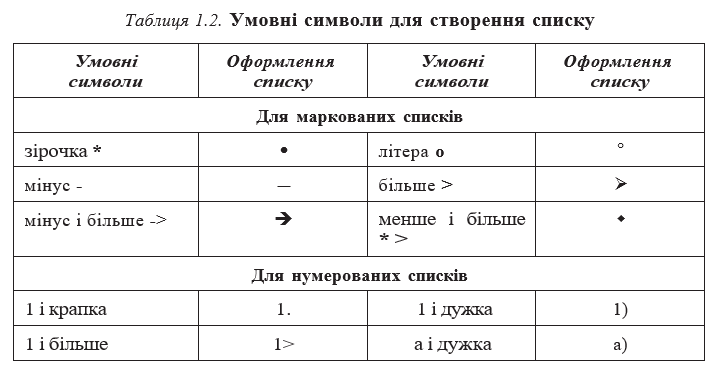
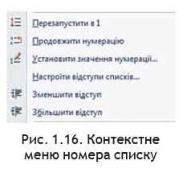
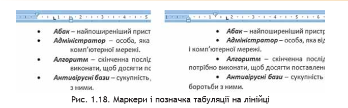

Розділ 2: Списки в текстовому документі
Списки та їхнє створення в текстовому документі
Особливим видом форматування абзаців є оформлення їх у вигляді списків. Списками можуть подаватися переліки об’єктів, описи поряд- ку дій тощо. Наприклад, список прізвищ учнів класу, інструкція щодо користування приладом, перелік правил оформлення документа, спи- сок ліків в аптечці, послідовність дій під час приготування деякої страви тощо.
У текстовому процесорі Word 2007 можна створювати списки трьох типів:
- Маркований, у якому кожний абзац на початку позначається деяким спеціальним символом (маркером).
- Нумерований, у якому на початку кожного абзацу вказується його номер. Порядковий номер абзацу в списку може задаватися числом (записаним арабськими або римськими цифрами), літерою алфавіту або числівником.
- Багаторівневий, у якому абзаци пронумеровані за їхньою ієрар- хічною структурою. Максимальна кількість вкладень елементів багаторівневого списку – 9 рівнів.
Існує кілька способів оформлення деякого фрагмента тексту у вигляді маркованого чи нумерованого списку.
І спосіб. Основний. Для початку введення списку слід розмісти- ти курсор у потрібному місці документа і виконати Основне Абзац Маркери або Нумерація . У поточному місці документа з’явиться маркер або номер того виду списку, який використовувався останнім. Для вибору іншого виду списку слід вибрати кнопку біля потрібного типу списку та у відкритому переліку Бібліотека маркерів або Бібліотека нумерованих списків (рис. 1.15) вибрати необхідний варіант оформлен- ня. Після цього можна вводити перший елемент списку.

Рис. 1.15. Види маркованих і нумерованих списків
Після введення першого елемента списку слід натиснути клавішу Enter – наступний номер або маркер з’являються в наступному рядку автоматично. Коли останній елемент списку введено, слід повторно вибрати кнопку відповідного списку на Стрічці, або двічі натиснути Enter, або ви- далити номер чи маркер клавішею Backspace.
ІІ спосіб . Автоматичне створення списку. Розмістивши курсор у по- трібному місці документа, слід увести спеціальні умовні символи, які ви- значають вид бажаного списку, і натиснути клавішу Пропуск (табл. 1.2). Одразу ж умовні символи перетворяться на відповідний маркер або номер. Далі можна розпочинати введення першого елемента списку.
ІІІ спосіб. Перетворення на список. Якщо деякі абзаци тексту, введеного раніше, потрібно оформити як список, то слід виділити ці аб- заци і вибрати на Стрічці кнопку відповідного типу списку: Маркери , Нумерація . Для вибору іншого виду списку слід вибрати кнопку .
Редагування списків
У текстовому процесорі Word 2007 створені списки зручно редагувати. Якщо в будь-якому місці списку потрібно додати ще один рядок, то слід установити курсор у кінці попереднього рядка списку і натиснути клавішу Enter – буде вставлено додатковий рядок з відповідним номером чи маркером, а нумерація в усіх наступних рядках списку автоматично зміниться. Для видалення елемента списку його потрібно виділити і на- тиснути клавішу Delete – нумерація також автоматично зміниться.
Інколи потрібно в деякому абзаці відмінити нумерацію, наприклад для введення тексту, який не є елементом списку. У такому випадку ну- мерацію слід видалити повторним вибором кнопки списку на Стрічці або натиснувши клавішу Backspace.
У деяких випадках (наприклад, під час копіювання списків) автоматична нумерація може не відповідати потребі користувача. Для зміни нумерації потрібно:
- Виділити номер елемента списку, який слід змінити.
- Відкрити контекстне меню виділеного но- мера (рис. 1.16).
- Вибрати потрібний варіант зміни номера:
- Перезапустити з 1 – нумерація елементів списку розпочнеться заново, з першого номера.
- Продовжити нумерацію – нумерація цього і наступних елемен- тів списку буде продовжена наскрізно від попереднього номера.
- Установити значення нумерації – нумерація елементів списку розпочнеться з номера, який укаже користувач.
Елементи списку можна відсортувати за зростанням або спаданням. Для цього слід виконати такий алгоритм:
Рис. 1.17. Вікно Сортування тексту
- Виділити абзаци, які упоряд- ковуються.
- Виконати Основне - Абзац - Сортування.
- Установити в діалоговому вікні Сортування тексту (рис. 1.17) такі значення:
- Сортувати за – абзацами.
- Тип даних – текст, число або дата.
- Порядок сортування – за зростанням чи за спаданням.
- Вибрати кнопку ОК.
Рядки списку змінять своє розташування, а нумерація елементів списку залишиться послідовною.
Форматування списків
За необхідності користувач може відформатувати створений спи- сок: змінити вид маркера, його формат, спосіб нумерації, розташування списку тощо. Для цього слід виділити потрібні елементи списку і вико- ристати потрібні елементи керування міні-панелі, групи Шрифт і Абзац вкладки Основне, діалогових вікон тощо. Для змінення відступів еле- ментів списку від поля також використовують маркери на горизонтальній лінійці.
Для встановлення відступу елемента списку від номера чи маркера використовується табуляція – засіб, який дає змогу розміщувати об’єкти в рядку в строго визначених місцях (позиціях табуляції). На лінійці позиція табуляції зазвичай позначається так: (рис. 1.18).
Для встановлення позначки табуляції достатньо вибрати на лінійці потрібне місце вказівником миші. Щоб змінити її позицію, потрібно пе- ретягнути позначку вздовж лінійки у нове місце. Для видалення позиції табуляції достатньо перемістити позначку табуляції за межі лінійки.
Також установити та змінити позиції табуляції можна у вікні Табуляція, для цього слід відкрити діалогове вікно Абзац і вибрати кнопку Табуляція.а
Однією з особливостей форматування списків є те, що формат маркерів (номерів) і формат символів тексту може бути різним. Якщо в тексті вибрати один з маркерів чи номерів списку, то будуть виділені всі аналогічні об’єкти в усьому списку. Далі можна змінювати їхній формат незалежно від формату іншого тексту списку
Ще однією особливістю форматування списків є так зване автома- тичне форматування. Якщо ви ввели перший елемент списку і відфор- матували його певним чином, то програма автоматично застосовуватиме такий саме формат і для інших елементів цього списку під час їх уведен- ня. Прикладом застосування такого форматування може бути створення списків означень термінів. Наприклад, на рисунку 1.20 перше слово оформлено курсивом, після нього символ тире як роздільник, далі текст звичайного накреслення. У наступних рядках списку таке форматування буде повторюватися та автоматично перемикатися з курсиву на звичай- ний шрифт під час уведення роздільника (знака тире).
За необхідності користувач може створити власний спосіб оформлення списку, вибравши команду Визначити новий маркер або Визначити новий числовий формат внизу діалогових вікон відповідних списків. У вікні, що відкриється, потрібно встановити значення властивостей нового виду списку.
Наприклад, для маркованого списку у вікні Визначення нового маркера можна вибрати зображення маркера у вигляді символу або рисун- ка, встановити параметри шрифту символу, визначити спосіб вирівнювання списку відносно лівого та правого полів сторінки. Вибираючи вид маркерів, слід пам’ятати, що відповідні шрифти та маркери повинні бути встановлені в опера- ційній системі комп’ютера, на якому планується використовувати створений тек- стовий документ. Інакше зображення маркера може не відповідати вибраному.
Табуляція та її використання
За допомогою табуляції можна розташувати об’єкти тексту в певних міс- цях рядка. Простір між об’єктами в рядку можна заповнити послідовністю деяких символів (крапками, тире, підкресленням тощо). Наведемо кілька прикладів ви- користання табуляції:
-
Зима Весна Літо Осінь Грудень
Січень
ЛютийБерезень
Квітень
ТравеньЧервень
Липень
СерпеньВересень
Жовтень
Листопад - Директор ЗАТ _____ І. В. Сидоренко
- Розділ 1................1 стор. Розділ 2................8 стор. Розділ 3................15 стор.
Для оформлення тексту таким чином на лінійці в потрібних місцях треба вста- новити позначки табуляції. Можна використовувати кілька типів табуляції, які вибираються кнопкою Тип табуляції, що розташована зліва від горизонтальної лінійки. Якщо послідовно вибирати цю кнопку, то тип табуляції буде змінюватися і можна встановити:

Після цього на лінійці відмічають позицію табуляції (рис. 1.23). Потім можна вводити потрібний текст. Для переміщення курсора в наступну позицію табуляції використовують клавішу Tab.
Для зміни значень властивостей табуляції потрібно відкрити діалогове вікно Табуляція (рис. 1.24), двічі клацнувши будь-яку позицію табуляції на лінійці або вибравши кнопку Табуляція у діалоговому вікні Абзац.
У цьому вікні для кожної позиції табуляції можна встановити значення таких її властивостей:
- відстань від межі лівого поля (за замовчуванням вимірюється в сантиметрах);
- спосіб вирівнювання тексту відносно позиції табуляції;
- символ-заповнювач простору між позиціями в рядку (заповнення відбувається до наступної позиції табуляції і лише тоді, коли натиснута клавіша Tab).
Рис. 1.24. Вікно встановлення позицій табуляції
Установивши значення властивостей для нової позиції табуляції, слід вибрати кнопку Установити — і нова позиція буде внесена до списку Позиції табуляції.
Щоб змінити значення властивостей уже встановленої позиції табуляції, потрібно вибрати її в списку Позиції табуляції і встановити нові значення її властивостей.
Кнопка Видалити цього вікна видаляє зі списку вибрану позицію табуляції. Усі встановлені позиції табуляції можна видалити кнопкою Видалити все.